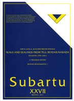

Greta Jans and Joachim Bretschneider
The Seals and Sealings of Tell Beydar/Nabada (Seasons 1995 - 2001): A Progress Report. Beydar Monographs 1/Subartu XXVII
Turnhout, Brepols, 2011
|  | The Kranzhugel, Tell Beydar (ancient Nabada) is located in the Upper Syrian Jezireh. Its main occupation dates back to the Early Dynastic/Early Jezireh IIIb period during which time Beydar was subordinate to Tell Brak (ancient Nagar). Tell Beydar, excavated since 1992 by a joint Syro-European expedition headed by Marc Lebeau and Antoine Suleiman, has produced more than 1500 sealings, representing 215 different designs, many of the finest quality. Eighty-five percent of these sealings can be ascribed to the final phase of the Early Jezireh IIIb Official Upper City Complex (dated around 2300 BC). This glyptic material is the largest corpus of Early Bronze Age sealings from Northern Mesopotamia attributed to an official household. The study of the different designs, the functional aspects and the contextual analyses of the sealings give an impression of the official administration in an Early Bronze Age palatial complex. The authors were responsible for the glyptic study of the 1995 - 2001 seasons, but earlier published glyptic data - the 1994 season conducted by Beatrice Teissier and the 2002 - 2006 seasons by Elena Rova - have also been incorporated in this research. |
{kind=link}
| Back to Publications | Title Page |
Table of Contents |
{kind=link}